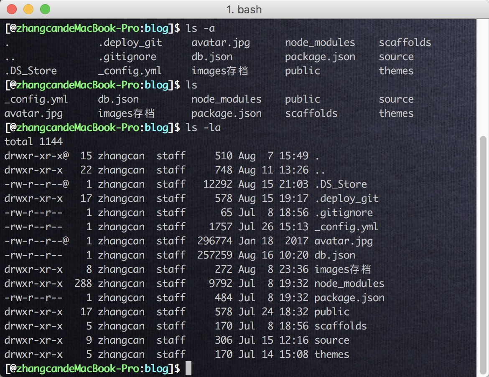

BGM: 权力的游戏配乐. (一个想让博客充满BGM的男人)
用Mac过程中, Terminal是一个很重要的而且很常使用的东西. 用得好就很高效哇. 目前我只是用了很少的一些命令, 也在不断的学习中,先写一篇博客作为学习笔记和Cheatsheet吧.
终端使用基本教程
为什么要使用命令行?
- 许多功能没有在GUI提供. 只有通过命令行.
- Finder会隐藏一些文件,然而command line会允许你访问所有文件.
- ~~
初识Command line
一条命令包括Command Name. Option. Arguments.Extras四个部分.但是后面三个部分是可选的. Options部分用-作为前导符. 其中许多命令的option只包含单个字母,这时候可以合并. 例如
ls -IA和ls -I -A是等效的. Arguments部分用来细化这个命令或命令具体的实施对象. Extra部分则用来进一步实现其他功能.
例如: 下列命令包含前三个部分. 用于删除Junk这个程序:
1 | $ rm -R /Application/Junk.app |
如果命令错了,系统会返回一些错误信息. 但是系统不会阻止你做傻事(跑路了).
文件和路径
(我一直感觉键盘(十个手指)的速度比鼠标(五个手指)快,能用键盘的不用鼠标.)
Command line工具是大小写敏感的, 并且对于文件名,必须包括扩展名.
Mac上文件夹是floder这个名词,但是在命令行中叫做 目录(directory).和Unix是一致的.
关于绝对路径和相对路径: 绝对路径完整描述一个文件的位置,总是以/(forward slash)开头. 相对路径只描述一部分位置信息,这和你的Command line目前的目录有关. 当你打开新的terminal程序时候,Command line回话的目录是你的home floder(有设置可以添加一个从当前文件夹打开命令行的功能, 忘了怎么设置了).
切换路径: cd(change directory). 不指定目录则返回home floder.
查看隐藏文件: ls -a (ls -la 加上-l可以控制输出格式)

前往其他卷: 在 command line 中，系统卷（也称为 root volume）是由开始的一个正斜杠表示的。然而也许听起来不可思议，在 command line 中其他卷看起来就在文件系统中一个叫做 Volumes 的文件夹中。cd /Volumes/
用command-line管理文件
有许多基础命令用来定位, 检视文件和文件夹.
cat: “concatenate”的意思, 会按顺序读取文件并输出到terminal窗口. 语法: cat后接你需要查看的文件的路径. 也可以用 >> 来增加文本文件的内容, 例如命令cat ../1.txt >> 2.txt就会把1的内容加到2的结尾. 这个>> 就是Extras.
less: 语法和cat一样. 更适合用来查看长文本, 因为它允许你查找文本.
which: 这个命令会定位某个命令的文件路径. 就是你执行某个命令的时候在使用哪个文件. 语法为which后接命令.
1 | $ which man ls pwd cd |
file: 这个命令尝试根据文件的内容输出文件类型. 语法为file后接文件路径.
find: 这个命令用来根据搜索关键词定位文件路径. find命令不使用Spotlight搜索服务. 但是它允许你设置非常具体的搜索条件,以及通配符. 语法为find后接搜索的起始路径.(如果使用spotlight服务,使用mdfind命令后接搜索关键词即可)
通配符:
- 星号(*, Asterisk)-代表任何长度的任何字符.
- 问号(?, Question mark)-代表任何单个字符.
- 方括号([], Square brackets)-定义一定范围的字符. 例如[Dd],[1-9].
编辑文件和文件夹
mkdir: “make directory”的缩写. 创建文件夹. 语法为mkdir后接新文件夹的目录. 可以用-p option来一起创建路径中不存在的文件夹, 这样就不用挨层的创建了.
`cp`: "copy"的缩写. 用来把文件从一处复制到另一处。语法为`cp`后接原始路径，后接目标路径。如果你想复制整个文件夹和所有内容，需要添加`-R`选项。如果指定的目标路径不含文件名，则 `cp` 命令会按原名复制。如果指定的目标路径包括文件名，则会复制为你指定的文件名。如果仅指定新文件名，则会在原处以新名称创建文件副本。注意，系统会自动替换同名文件而不出现提示。
mv: “move”的缩写，用来移动文件。语法为mv后接原路径，后接新路径。mv 的指定路径规则和 cp 是一样的（没错，如果仅指定新文件名，它就成了重命名命令）。
rm: “remove”的缩写, 会永久删除文件.注意，command-line中没有废纸篓。语法为rm后接文件路径。然而，使用 rm 命令删除的文件有可能可以通过数据恢复工具恢复。如果希望安全删除文件，可以使用srm命令。
rmdir和rm -R: rmdir是“remove directory”的缩写，这个命令会永久删除文件夹。再强调一遍，CLI 中木有废纸篓。语法为rmdir后接希望删除目录的路径。然而，rmdir 命令无法删除含有任何其他文件的文件夹，所以大多数情形下rmdir命令是不适用的。不过，你可以利用rm添加-R选项来删除文件夹及包含的所有文件。
vi: 这个好长好强的, 另起一篇博客吧.
用Command-Line管理系统
使用su来切换用户: su代表”Substitute user identity”, 允许在命令行中切换到另一个用户账户. 语法为su后接用户的短名称. 可以用who -m来验证当前登录的身份.
sudo: “super user do”. 用sudo执行一个命令会使用root账户权限.当然,使用之前需要密码.key
其他一些系统命令
重启Mac: shutdown -r now
关闭Mac: shutdown now (这个也可以定时关机)
统计剪贴板中文本的行数: pbpaste | wc -l
统计剪贴板中文本的单词数: pbpaste | wc - w
显示剪贴板中文本的前5行: pbpaste | head -n 5
显示剪贴板中文本的最后5行: pbstage | tail -n 5
杀死制定进程: kill -9 pid
复制出自己的ssh-key: pbcopy < ~/.ssh/id_rsa.pub
快捷键
将光标移到行首: control+a
将光标移到行尾: control+e
清空屏幕(和clean命令效果相同): control+l
清除当前行: control+u
清除至当前行尾: control+k
查找之前输入过的命令: control+r
将当前执行的命令转至后台: control+z
查看后台运行的所有命令: jobs
fg[n] 将第n个命令转到前台
bg[n]将第n个命令转到后台
几小点
- man可以查看指令说明, 比如
man ls, 看完按Q键跳出. - cd遇到空白时候,就是当前目录有空格或是特殊符号时候.用\就行了.(不想费事的话可以直接鼠标拖动文件夹到terminal)
- pwd当前路径.(print working directory)
- ls(list directory contents) 列出当前目录的内容.
- ~/相当于 User/XX(当前用户) ~(鄂化符 tilde)的作用就是表示当前的用户文件夹
- Tab complete功能真高效.
- 三条命令行的准则: 1.总是仔细检查你的命令;2.总是使用Tab Completion来帮助你避免拼写错误;3.使用sudo之前,总是仔细检查你的命令.
- 输入命令
open .可以用finder打开当前的位置. - 终止命令用control + C.
history命令查看历史记录.- control+L清屏.